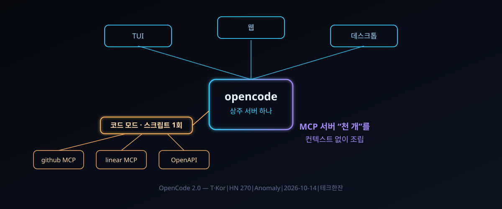

10/14 공개된 OpenCode 2.0 — MCP '천 개'를 통째로 삼킨 코드 모드, 구버전 플러그인은 전멸

결론부터. 코딩 에이전트의 도구 연결이 '프롬프트에 목록 깔기'에서 '스크립트로 조립하기'로 넘어갔다 — 그 결별을 메이저 번호로 선언한 릴리스다.
터미널 코딩 에이전트 OpenCode가 2.0을 공개했다. 발표문은 해커뉴스에서 표 270개를 받았다(HN 소스 수집 기준, 2026-10-15 확인). 이름만 올린 갱신이 아니다. 서버 구조도, API도, 플러그인 체계도 전부 갈렸다.
가장 눈에 띄는 건 코드 모드다. MCP 서버를 몇십 개씩 달아도 컨텍스트가 안 부풀한다는 설계인데, 지난주 이 매장이 다룬 Pi의 노선 전환과 정확히 같은 방향을 가리킨다. 이번엔 반대편 진영이 더 멀리 갔다.
30초 요약
| 항목 | 내용 |
|---|---|
| 무슨 사건 | 오픈소스 터미널 코딩 에이전트 OpenCode가 2.0 메이저 릴리스. 발표문은 10/14 해커뉴스 표 270 |
| 서버 구조 | 백그라운드 상주 프로세스 하나로 통합 — TUI·웹·데스크톱이 같은 서버를 공유, 스크립트 클라이언트는 자동 발견 |
| 핵심 기능 | 코드 모드: MCP·OpenAPI를 JavaScript 함수로 바꿔 스크립트 한 편으로 조립. 전 MCP 서버가 기본 적용 대상 |
| 파괴적 변경 | 1.0 플러그인 동작 불가·API 전면 교체·설정 파일 이동. 승급은 1.x 최신 후 opencode upgrade --major |
| 직접 확인 수치 | 메인 저장소(AnomalyCo/OpenCode) 스타 213,541개·마지막 푸시 2026-10-15 — 이 글 작성일 API 실측 |
| 연결고리 | 9월 말 '코드 모드'를 내세워 MCP를 코어에 들인 Pi(HN 635표)와 같은 노선 — 2주도 안 돼 최대 오픈소스 진영이 같은 방향을 공식화 |
1. 무엇이 터졌나
OpenCode는 오픈소스 터미널 코딩 에이전트다. 2025년 4월에 저장소가 열린 뒤 1년 반 만에 스타 21만 개(작성일 API 실측)를 모았다. Claude Code의 대항마로 가장 자주 이름이 오르는 도구다. 제작사 Anomaly가 10월 14일(현지 시각) 2.0 발표문을 올렸고, 하루도 안 돼 해커뉴스에 올라 표 270개가 붙었다.
발표문의 자기평가가 예사롭지 않다. 구버전 API를 두고 "세상이 에이전트가 뭔지를 배우는 동안 여기저기서 주워 붙이며 자랐고, 결론적으로 형편없었다"고 스스로 적었다. 일일 사용자 수백만 명의 사용 기록을 설계 입력으로 삼았다는 주장도 함께 붙였다. 부분 수정이 아니라 API를 백지에서 다시 그렸다는 얘기다.
바뀐 축은 여섯 개다. 상주 서버, 새 API와 공식 클라이언트, 코드 모드, 백그라운드 작업, 플러그인 내실화, 그리고 CLI를 라이브러리처럼 쓰는 SDK. 아래 표는 그중 사용자 손에 닿는 변화만 정리한 것이다.
| 2.0의 변화 | 1.0의 모습 | 사용자 체감 |
|---|---|---|
| 상주 서버 자동 기동 | 클라이언트/서버 구조는 있었지만 파워유저용 | TUI·웹·데스크톱이 같은 세션을 공유, 크론 스크립트는 서버를 자동 발견 |
| 백지에서 다시 그린 API | 즉흥적으로 자란 구 API | 공식 클라이언트 패키지 제공, 에이전트 스스로 자기 API를 호출(작업 시작 시 git 워크트리로 세션 이동 등) |
| 코드 모드 기본값 | 도구 호출은 JSON 왕복 | MCP 서버 전부 코드 모드 적용 — 여러 도구 호출을 스크립트 1회 왕복으로 |
| 백그라운드 서브에이전트·셸 | 긴 작업은 화면 정지 | "뒤에서 리뷰돌려" 시키고 앞에서는 계속 대화, 긴 셸 명령은 비동기, 핫키로 현재 작업을 배경으로 밀기 |
| 플러그인 80개 이상 | 플러그인 시스템은 있었지만 찬밥 | 2.0 기능 대부분을 내부 플러그인으로 구현 — API가 계속 살아있게 유지, 세션 도중 셀프 플러그인 작성·핫리로드 |
2. 왜 대단한가
① 'MCP 천 개' 논쟁을 구조로 끝냈다
MCP의 오래된 딜레마는 이랬다. 서버를 열 개 붙이면 도구 정의서가 컨텍스트를 잡아먹고, 그래서들 "MCP는 열 개가 한계"라고 말했다. 2.0의 해법은 목록을 줄이는 게 아니라 목록 자체를 없애는 쪽이다. MCP 서버와 OpenAPI 엔드포인트를 JavaScript 함수로 바꿔 놓고, 모델은 함수를 부르는 스크립트를 짜면 된다. 발표문은 "MCP 서버 천 개를 붙여도 컨텍스트 부풀림이 최소한이 된다"고 단언한다. 노드 VM의 복잡성도 QuickJS 같은 이식형 임베딩도 없는, 자체 제작 초소형 JavaScript 인터프리터로 돌린다고 명시했다.
설계 판단의 핵심은 기본값에 있다. "2.0의 모든 MCP 서버는 코드 모드에 옵트인 상태로 참여한다" — 예외 조항이 없는 기본값이다. 사용자 선택이 아니라 구조 결정이라, 이 한 문장이 그대로 '도구 노출의 종말' 선언문이다.
② 상주 서버가 에이전트를 '앱 플랫폼'으로 바꾼다
세 화면이 서버 하나를 공유한다는 건 창이 늘어나는 이야기가 아니다. 세션이 화면 밖에서 살기 시작한다는 뜻이다. 터미널로 시작한 작업을 창을 닫고 데스크톱 앱에서 이어받고, 웹에서 상태를 본다. 여기에 `/pair` 명령 하나로 다른 호스트·다른 앱이 내 서버에 붙을 수 있고, 그 흐름을 쓰는 네이티브 앱을 예고했다.
자동 발견되는 로컬 서비스는 자동화 쪽 값을 더한다. 발표문도 예약 작업에 특히 쓸모있다고 적었다 — 크론에서 세션을 만들고 프롬프트를 넣는 스크립트가 엔드포인트 하드코딩 없이 성립한다. 에이전트가 백그라운드에서 자기 API를 불러 새 작업용 git 워크트리로 세션을 옮기는 동작처럼, '자기 API를 아는 프로그램'이 된 것도 구조적으로 새 층위다.
③ 프레이밍의 정치 — 코드 모드의 발상지를 누가 점유했나
지난주 이 매장은 Pi의 MCP 코어 채택(HN 635표)을 전하면서, 그 근거 문서에 "아이디어는 Cloudflare 쪽에서 왔다"는 표기가 있다고 함께 전한 바 있다. 즉 코드 모드의 원조는 Pi가 아니고, Pi도 빌려온 셈이었다. 그런데 2주가 지나기 전에 업계 최대 오픈소스 에이전트가 같은 장치를 코어 기본값으로 확정하고 발표문 전면에 세웠다. 표준은 아이디어가 아니라 최대 배포량의 기본값으로 결정난다는 정석 패턴이, 2주 간격으로 두 번 이어진 셈이다.
④ 플러그인 80개 — 자기 먹이를 스스로 기르는 구조
"1.0에도 플러그인 시스템은 있었지만 관심을 못 받았다. 고치려고 2.0 기능을 거의 전부 내부 플러그인으로 구현했다 — 그래야 플러그인 API가 계속 살아 있을 수밖에 없도록." 발표문의 이 문장은 조직 지원 없이 API를 살려두는 드문 방법을 보여준다. 버티는 수단이 문서도 서드파티 의존도도 아니고, 자기 제품 자체를 첫 고객으로 앉히는 것이니. 핫리로드까지 지원하니 에이전트한테 "나한테 쓸 플러그인 하나 만들어"라고 시켜 그 자리에서 쓸 수 있다.
3. 바로 써먹기
발표문에 실린 공식 클라이언트 사용례를 그대로 옮기면 이렇다(5줄 이내 축약, 원문은 발표문 'The API' 절).
import { OpenCode } from "@opencode/client";
const endpoint = await Service.ensure(); // 로컬 서버 자동 발견
const client = OpenCode.make({ baseUrl: endpoint.url, ... });
const session = await client.session.create({ ... });
await client.session.prompt({ sessionID: session.id,
text: "Review the current changes" });코드 모드 쪽은 이렇게 읽히면 된다. 발표문 예시는 GitHub 버그를 모아 Linear 이슈로 옮기는 스크립트 한 편이다 — 검색 두 번·실행 두 번이 왕복이 아니라, 호출·지도·병렬이 전부 코드 안에 들어간다.
const { issues } = await tools.github.list_issues({
owner: "anomalyco", repo: "opencode", labels: ["bug"] });
const filed = await Promise.all(issues.map(({ title }) =>
tools.linear.save_issue({ team: "OC", title })));
return filed.map(i => i.identifier); // 도구 왕복 1회이주가 필요한 사람용 판단표다.
| 현재 상태 | 2.0을 지금 써야 하나 | 이유 |
|---|---|---|
| OpenCode 1.x 사용자 | 승급 전 점검 후 진행 | 1.x 최신으로 먼저 올린 뒤 opencode upgrade --major. 플러그인·설정 이동은 불가피 — 발표문이 문서에 에이전트를 직접 들이켜 자동 이주시키라는 조언을 적었다 |
| MCP 서버 다수 운영팀 | 이주 1순위 | 컨텍스트 부풀림 때문에 도구 수를 줄여온 팀은 코드 모드가 정답. 왕복 횟수 자체가 줄어 지연도 함께 준다 |
| Claude Code·Codex CLI 병행 사용자 | 관망 후 실측 | 코드 모드의 상한·타임아웃·실패 처리 같은 운영 수치는 이번 발표문에 안 나왔다 — 하네스 내부 수치부터 확인이 순서 |
| CI·자동화 파이프라인 | SDK 경로 검토 | 서버 프로토콜을 말하는 라이브러리를 씹어서 자기 전용 환경을 만들 수 있다는 설계. Durable Objects 같은 특수 환경 예시까지 명시됨 |
4. 해외 반응 쟁점
해커뉴스 스레드의 온도는 발표문의 낙관과 결이 같지 않다. "구 API가 형편없었다"는 자복엔 다시 쓴 걸 환영하는 쪽과 "그러니 내 플러그인은 왜 죽였나"가 부딪힌다. 메이저 번호의 값은 결국 파괴적 변경을 고백한 값이라는 반응이다. 지난주 데몬 논쟁으로 한창이던 정서도 건드렸다 — 상주 프로세스 자동 기동이라는 설계가 한복판 한가지를 찔렀기 때문이다. "끄는 법이 뭐지"류의 농담이 나오는 이유다.
피할 수 없는 비교는 Claude Code와의 경쟁 구도다. 오픈소스 진영이 기능 경쟁이 아니라 '표준 채택 속도'로 붙고 있다는 해석이 붙는다. Pi→OpenCode로 이어진 2주를 보면, 에이전트 하네스의 논쟁 축은 모델에서 도구 호출의 형태로 넘어간 뒤다.
5. 마시기 전 주의
첫째, 이 글의 근거는 제작사 발표문 전문과 저장소 API뿐이다. '일일 사용자 수백만', '스타 21만'은 각각 제작사 주장과 작성일 실측이지 제3자 검증이 아니다. 둘째, 코드 모드의 안전 경계(무엇을 못하고 어디까지 허용되나)는 이번 발표문에 안 나왔다 — Pi 쪽 문서처럼 기본 수치가 박혀 나올 때까지는 '되는 것'만 확인된 상태다. 셋째, 호환성 파괴가 명시된 이상 팀 워크스페이스에 투입하기 전에 플러그인 인벤토리를 먼저 세자. 넷째, '코드 모드 = 표준화'라는 서사는 Pi 건과 겹쳐 읽은 이 기자의 해석이지 제작사의 주장이 아니다.
바로 가기
같이 읽기
- 9월 29일 뒤집힌 "MCP는 안 쓴다" — 코드 모드라는 이름이 어디서 굴러온 것인지, 2주 전의 원조 격 이야기
- 백그라운드 데몬 논쟁의 생생한 사례 — "상주 프로세스 자동 기동"을 누가 싫어하는지 보여 주는 글